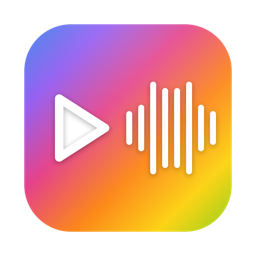

MACOS 13+ · AAF POUR PRO TOOLS · GRATUIT
Transforme l'XML de ton projet Final Cut en un AAF propre, prêt pour ton mixeur. Rôles, transcodage, poignées, marqueurs et vidéo de référence — en quelques clics.
Version 1.1.2 · macOS 13+ · mises à jour auto

TOUT CE QU'IL FAUT
Un AAF que Pro Tools ouvre sans broncher.
Chaque rôle audio devient une piste Pro Tools, nommée et ordonnée. Réordonne par glisser-déposer.
Les clips composés imbriqués sont résolus récursivement, à l'échantillon près.
Transcodage PCM via FFmpeg, conversion de sample-rate, sélection de canaux.
Découpe à la portion utilisée + 1 à 4 s de poignées, bornées par la source.
AAF autonome avec médias incorporés, ou léger avec WAV externes liés.
Ajoute ta vidéo guide comme piste image, alignée pour le mixeur.
Chapitres reportés en marqueurs, fades et clip-gain gravés ou ignorés.
L'app se met à jour toute seule via GitHub. Toujours la dernière version.
SIMPLE COMME BONJOUR
Un assistant qui révèle chaque étape au fur et à mesure.
Glisse ton fichier .fcpxml.
Choisis où enregistrer l'AAF.
Coche et ordonne les pistes.
Indique où sont les fichiers.
Règle, puis lance la conversion.
Gratuit, pour macOS 13 et plus. Mises à jour automatiques incluses.